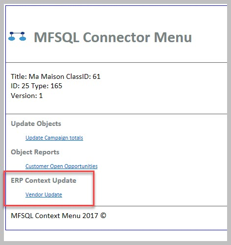
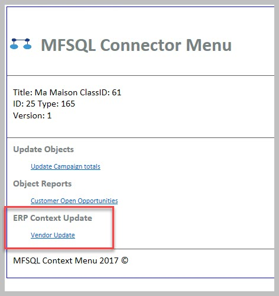

Using event handler for SQL action¶
In this use case we would like to illustrate how an event handler can be used to trigger an SQL procedure using the Context Menu functionality.
Refer to Using the Context Menu for more detail on using and setting up context menu related functionality:
The actions to start an SQL procedure from M-Files can be called via menu items, or workflow states or event handlers. This case highlights the event handler method.
Event handlers is useful when a SQL operation must be initiated based on the event handler trigger. For instance, if a new object must automatically be created in the 3rd party system following the creation of a new object in M-Files then the ‘AfterCreateNewObjectFinalize’ event handler can be used to trigger the SQL procedure. When the action should be performed after the object in M-Files was changed, then the ‘AfterCheckInChanges’ can be used.
Using event handlers should be considered carefully. Some of the risks associated include:
Negative impact on performance - The use of event handlers put additional load on M-Files processing.
Clashes with other event handlers - compliance kit, Vault applications and other event handlers could clash with each other.
Table locking - table or record locking could take place in the thirdparty database, in MFSQL Connector database and M-Files. Avoiding table locking, and corrective action when table locking has taken place should be considered when designing the processes triggered by the event handler.
Creating an infinite loop - If multiple event handlers are used in MFSQL connector, and the one event handler automatically triggers another event handler, which in turn triggers the originating event handler then an infinite loop arose.
Update Precedence - when updates are automatically triggered from both third party system and M-Files, special care should be taken to isolate changes in both systems. This is likely to use staging tables to broker the direction of update.
In this use case we will demonstrate setting up the event handler and context menu for creating a new object in the third party system on finalising the creation of the object in M-Files. The use case will also demonstrate the setup how to setup the event handler to update the third party system from M-Files and get pull updates from the third party system without causing and infinite loop.
The configuration and custom work for building this case involve the following key elements
Prepare custom procedure(s) to process updates. In our case we used a single procedure for all four updates.
Third party insert
Third party update
M-Files insert
M-Files update
Add Context menu actions
Configure event handler scripts
Note the following:
Stop the event handler from re-processing updates by the third party system by filtering out any updates by the MFSQL Connector user.
The custom procedure
Copy and use the custom.CMDoObjectActionForWorkFlowState procedure as the framework for the new custom.DoVendorUpsert procedure
Update MF to SQL for the object before processing
Give precedence for the direction of update by using the action type of the Context Menu to set the direction in the procedure
Use ‘Select’ statements with ‘Except’ to isolate only the changed or new records.
There is no need for a wait state in the procedure as the checkin of the object will take place before the action is called
Create vendor in M-Files, auto create in third party¶
Use AfterCreateNewObjectFinalize Event Handler with filter on the class and the MFSQL Connector user.
Note that the following must be updated for your scenario: VendorClassID; MFSQLConnectorUserID; ActionName
Option Explicit
Dim oProperties : Set oProperties = Vault.ObjectPropertyOperations.GetProperties(ObjVer)
Dim ClassID
ClassID= Vault.ObjectPropertyoperations.GetProperty(ObjVer, 100).value.GetLookupID
Dim LastModifiedUserID
LastModifiedUserID = Vault.ObjectPropertyoperations.GetProperty(ObjVer, 23).value.GetLookupID
Dim VendorClassID : VendorClassID = 61
Dim MFSQLConnectUserID : MFSQLConnectUserID = 41
If (VendorClassID = ClassID and LastModifiedUserID <> MFSQLConnectUserID) Then
Dim strInput
strInput = "{""ObjectID"" : "&ObjVer.ID &", ""ObjectType"" : "&ObjVer.Type &", ""Objectver"" : "&ObjVer.Version&",""ClassID"" : "&ClassID&", ""ActionName"" : ""VendorEventAction"", ""ActionTypeID"": ""5""}"
Dim strOutput
strOutput = Vault.ExtensionMethodOperations.ExecuteVaultExtensionMethod("PerformActionMethod", strInput)
'Err.Raise MfScriptCancel, strOutput
End If
Create action record in the Context menu
Note ‘IsStateAction’ = 1; IsAsynchronous = 1
EXEC [dbo].[spMFContextMenuActionItem] @ActionName = 'VendorEventAction', -- nvarchar(100)
@ProcedureName = 'custom.DoVendorUpsert', -- nvarchar(100)
@Description = 'Updating Vendors in ERP ', -- nvarchar(200)
@RelatedMenu = null, -- nvarchar(100)
@IsRemove = 0, -- bit
@IsObjectContext = 1, -- bit
@IsWeblink = 0, -- bit
@IsAsynchronous = 1, -- bit
@IsStateAction = 1, -- bit
@PriorAction = null, -- nvarchar(100)
@UserGroup = 'All Internal Users', -- nvarchar(100)
@Debug = 0 -- int
Snippets from the custom.DoVendorUpsert procedure
Creating new vendor in ERP
IF NOT EXISTS
(
SELECT 1
FROM [NORTHWND].[dbo].[Suppliers]
INNER JOIN [dbo].[MFVendor] AS [mv]
ON [SupplierID] = [mv].[ExternalID]
AND [mv].[ObjID] = @ObjectID AND [mv].[Deleted] = 0
)
BEGIN
SET @ProcedureStep = 'Insert into ERP';
IF @Debug > 0
BEGIN
RAISERROR(@DebugText, 10, 1, @procedureName, @ProcedureStep);
END;
-------------------------------------------------------------
-- Create new in ERP: will only create new item for the context object
-------------------------------------------------------------
INSERT INTO [NORTHWND].[dbo].[Suppliers]
(
[CompanyName]
,[Address]
,[City]
,[PostalCode]
)
SELECT
SUBSTRING([ma].[Name_Or_Title], 1, 40) AS [Company Name]
,SUBSTRING(([ma].[Address_Line_1] + ', ' + [ma].[Address_Line_2]), 1, 60) AS [Address]
,SUBSTRING([ma].[City], 1, 15) AS [City]
,SUBSTRING([ma].[Postal_Code], 1, 15) AS [Postal]
FROM [dbo].[MFVendor] AS [ma]
WHERE [ma].[ObjID] = @ObjectID AND [ma].[Deleted] = 0;
SET @ExternalID =
( SELECT MAX([T].[SupplierID])
FROM [NORTHWND].[dbo].[Suppliers] AS [T]
);
UPDATE [dbo].[MFVendor]
SET [Process_ID] = 1
,[ExternalID] = @ExternalID
WHERE [ObjID] = @ObjectID;
END;
Update Vendor in M-Files auto update in third party¶
Use ‘AfterCheckinChanges’ event handler. Use the same script as above.
In our example only one procedure is used for all the update scenarios. The same context menu record is therefore used for the action.
Add the following to the custom.DoVendorUpsert procedure
to get the Actiontype
SELECT @ActionType = [ActionType] FROM MFContextMenu WHERE id = @ID
The update code will only apply when the action is called from the event handler
-------------------------------------------------------------
-- Update ERP
-------------------------------------------------------------
IF @ActionType = 5
BEGIN
;
WITH [cte]
AS (SELECT [mv].[Name_Or_Title]
,[mv].[Address_Line_1]
,[mv].[City]
,[mv].[Postal_Code]
,[mv].[ExternalID]
FROM [dbo].[MFVendor] AS [mv] where [mv].[Deleted] = 0
EXCEPT
SELECT [s].[CompanyName]
,[s].[Address]
,[s].[City]
,[s].[PostalCode]
,[s].[SupplierID]
FROM [NORTHWND].[dbo].[Suppliers] AS [s])
UPDATE [T]
SET
[T].[CompanyName] = [s].[Company Name]
,[T].[Address] = [s].[Address]
,[T].[City] = [s].[City]
,[T].[PostalCode] = [s].[Postal]
-- SELECT *
FROM [cte]
INNER JOIN [NORTHWND].[dbo].[Suppliers] AS [T]
ON [cte].[ExternalID] = [t].[SupplierID]
INNER JOIN
(
SELECT CAST([ma].[ExternalID] AS VARCHAR(5)) AS [CompanyID]
,SUBSTRING([ma].[Name_Or_Title], 1, 40) AS [Company Name]
--NULL,
--NULL,
,SUBSTRING(([ma].[Address_Line_1] + ', ' + [ma].[Address_Line_2]), 1, 60) AS [Address]
,SUBSTRING([ma].[City], 1, 15) AS [City]
-- SUBSTRING([ma].[Account_State], 1, 15) AS [region],
,SUBSTRING([ma].[Postal_Code], 1, 15) AS [Postal]
,SUBSTRING([ma].[Country], 1, 15) AS [country]
-- SUBSTRING([ma].[Phone], 1, 24) AS [Phone],
-- SUBSTRING([ma].[Fax], 1, 24) AS [Fax],
FROM [dbo].[MFVendor] AS [ma]
WHERE [ma].[Deleted] = 0
) AS [s]
ON [T].[SupplierID] = [s].[CompanyID];
-------------------------------------------------------------
-- Update changes into ERP
-------------------------------------------------------------
WITH [cte]
AS (SELECT [s].[CompanyName]
,[s].[Address]
,[s].[City]
,[s].[PostalCode]
,[s].[SupplierID]
FROM [NORTHWND].[dbo].[Suppliers] AS [s]
EXCEPT
SELECT [mv].[Name_Or_Title]
,[mv].[Address_Line_1]
,[mv].[City]
,[mv].[Postal_Code]
,[mv].[ExternalID]
FROM [dbo].[MFVendor] AS [mv] WHERE [mv].[Deleted] = 0)
UPDATE [dbo].[MFVendor]
SET [Process_ID] = 1
,[Name_Or_Title] = [cte].[CompanyName]
,[Address_Line_1] = [cte].[Address]
,[City] = [cte].[City]
,[Postal_Code] = [cte].[PostalCode]
FROM [dbo].[MFVendor] AS [mv]
INNER JOIN [cte]
ON [cte].[SupplierID] = [mv].[ExternalID]
WHERE [mv].[Deleted] = 0;
END
Update M-Files following an update in third party application.¶
An insert or update in the third party application can be triggered in various ways
Trigger on the third party table calling the MFSQL procedure
Action Menu in M-Files to pull updates by calling the MFSQL procedure from M-Files
Scheduled agent in SQL to call the MFSQL procedure every so often.
Our example is based on having an action Menu in M-Files. We will be using a context sensitive menu. The action will use the same procedure as above.
Create the menu heading and menu item.
EXEC [dbo].[spMFContextMenuHeadingItem] @MenuName = 'ERP Context Update', -- nvarchar(100)
@PriorMenu = null, -- nvarchar(100)
@IsObjectContextMenu = 1, -- bit
@IsRemove = 0, -- bit
@UserGroup = 'All Internal Users', -- nvarchar(100)
@Debug = 0 -- int
EXEC [dbo].[spMFContextMenuActionItem] @ActionName = 'Vendor Update', -- nvarchar(100)
@ProcedureName = 'custom.DoVendorUpsert', -- nvarchar(100)
@Description = 'Updating Vendors from ERP ', -- nvarchar(200)
@RelatedMenu = 'ERP Context Update', -- nvarchar(100)
@IsRemove = 0, -- bit
@IsObjectContext = 1, -- bit
@IsWeblink = 0, -- bit
@IsAsynchronous = 1, -- bit
@IsStateAction = 0, -- bit
@PriorAction = null, -- nvarchar(100)
@UserGroup = 'All Internal Users', -- nvarchar(100)
@Debug = 0 -- int
The menu is exposed when right click on the object in M-Files.
 

Add the following snippet to the custom.DoVendorUpsert procedure
Note that this code will only operate when the action is called from the menu. This is important to ensure that the previous code for updating M-Files changes to ERP does not overwrite the changes from ERP to M-Files.
-------------------------------------------------------------
-- insert ERP to MF
-------------------------------------------------------------
IF @ActionType = 3
BEGIN
SET @ProcedureStep = 'Insert into MF';
IF @Debug > 0
BEGIN
RAISERROR(@DebugText, 10, 1, @procedureName, @ProcedureStep);
END;
WITH [cte]
AS (SELECT [s].[SupplierID]
FROM [NORTHWND].[dbo].[Suppliers] AS [s]
EXCEPT
SELECT [ExternalID]
FROM [dbo].[MFVendor] mv
WHERE [mv].[Deleted] = 0)
INSERT INTO [dbo].[MFVendor]
(
[Address_Line_1]
,[Address_Line_2]
,[City]
,[Country_ID]
,[Name_Or_Title]
,[Postal_Code]
,[Process_ID]
,[ExternalID]
)
SELECT [s].[Address]
,NULL
,[s].[City]
,NULL
,[s].[CompanyName]
-- ,[s].[ContactName]
-- ,[s].[ContactTitle]
-- ,[s].[Region]
-- ,[s].[Country]
,[s].[PostalCode]
-- ,[s].[Phone]
-- ,[s].[Fax]
-- ,[s].[HomePage]
,1
,[cte].[SupplierID]
FROM [NORTHWND].[dbo].[Suppliers] AS [s]
INNER JOIN [cte]
ON [cte].[SupplierID] = [s].[SupplierID];
-------------------------------------------------------------
-- changes from ERP to SQL
-------------------------------------------------------------
WITH [cte]
AS (SELECT [s].[CompanyName]
,[s].[Address]
,[s].[City]
,[s].[PostalCode]
,[s].[SupplierID]
FROM [NORTHWND].[dbo].[Suppliers] AS [s]
EXCEPT
SELECT [mv].[Name_Or_Title]
,[mv].[Address_Line_1]
,[mv].[City]
,[mv].[Postal_Code]
,[mv].[ExternalID]
FROM [dbo].[MFVendor] AS [mv] WHERE [mv].[Deleted] = 0)
UPDATE [dbo].[MFVendor]
SET [Process_ID] = 1
,[Name_Or_Title] = [cte].[CompanyName]
,[Address_Line_1] = [cte].[Address]
,[City] = [cte].[City]
,[Postal_Code] = [cte].[PostalCode]
FROM [dbo].[MFVendor] AS [mv]
INNER JOIN [cte]
ON [cte].[SupplierID] = [mv].[ExternalID];
END;
Finalise the process by updating the changes into M-Files
EXEC [dbo].[spMFUpdateTable] @MFTableName = @MFClassTable
-- nvarchar(128)
,@UpdateMethod = 0
-- int
,@Update_IDOut = @Update_ID OUTPUT
-- int
,@ProcessBatch_ID = @ProcessBatch_ID
-- int
,@Debug = 0;